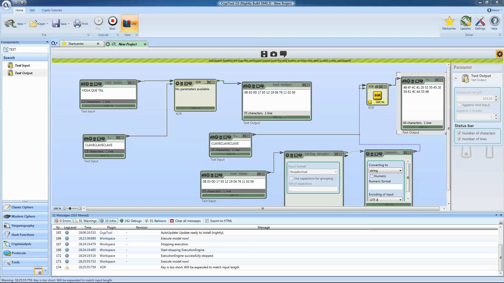

Criptografia com PHP
Quem sou eu?
- Vinícius Campitelli • vcampitelli.github.io
- MT4 Tecnologia • @MediaPost • Curseduca • senhasegura
O que é criptografia?
é a prática e o estudo de técnicas para comunicação segura na presença de terceiros
é a construção e análise de protocolos que previnam terceiros de ler mensagens privadas
Texto claro
→
Texto cifrado
Tipos de criptografia
Simétrica
- Utiliza uma mesma chave para criptografar e descriptografar os textos
-
Exemplos
- AES
- 3DES
- RC4
- Blowfish
Cifras
Cifras em bloco
- Algoritmo determinístico que usa uma chave para transformar um bloco em um texto cifrado
-
AES
- Blocos de 128 bits
- Chaves de 128, 192 ou 256 bits
Modos de operação
- Mecanismo que irá dividir a mensagem em blocos e aplicar a cifra a cada um
-
Exemplos
- ECB
- CBC
- CTR
- GCM (PHP 7.1)
Não use ECB!

Tux original

Tux aplicando-se CBC / CTR

Tux aplicando-se ECB
Cifras de fluxo (stream)
- Algoritmo que opera em um bit/byte de cada vez
- Chave "infinita" de dados pseudo-randômicos
- Indicado quando não se sabe o tamanho do dado
-
Algoritmos
- RC4, mais conhecido mas inseguro
- eSTREAM: projeto para escolher novos algoritmos
Assimétrica
- Chave privada: utilizada para criptografar (escrever)
- Chave pública: utilizada para descriptografar (ler)
-
Algoritmos
- RSA
- Curvas Elípticas
- Provê encriptação e autenticação
- Utilizada para estabelecer conexões seguras em ambientes inseguros
-
Principais utilizações
- SSH
- SSL/TLS (certificados digitais)
- PGP
Problema: Troca de chaves
Algoritmo Diffie–Hellman
Fonte: Wikipedia
Geradores de aleatoriedade
-
PHP 7
random_int()random_bytes()
-
PHP 5.3+
openssl_random_pseudo_bytes()
- PHP 5.x
Más práticas
rand()emt_rand()não são criptograficamente seguros
Vetores de inicialização
- Utilizados para "inicializar" os algoritmos
-
openssl_cipher_iv_length()para buscar o tamanho do IV para cada algoritmo -
openssl_get_cipher_methods()para descobrir os algoritmos disponíveis
Exemplo
random_bytes(openssl_cipher_iv_length('aes-256-ctr'));
//
Q��A|Gh���C
�MMás práticas gerais
- mcrypt: desatualizada desde 2008
- Fazer seu próprio algoritmo
Na prática
string openssl_encrypt( string $data , string $method , string $key [, int $options = 0 [, string $iv = "" [, string &$tag = NULL [, string $aad = "" [, int $tag_length = 16 ]]]]] )
$key = openssl_random_pseudo_bytes(32); // chave de 256 bits
$iv = openssl_random_pseudo_bytes(
openssl_cipher_iv_length('aes-256-ctr')
);
$data = 'Olá, PHP Conference 2017!';
$encrypted = openssl_encrypt($data, 'aes-256-ctr', $key, 0, $iv);
// LKdTM372XbDEYP6UnAWbhChZ7wxbaOt+6qg=string openssl_decrypt( string $data , string $method , string $key [, int $options = 0 [, string $iv = "" [, string $tag = "" [, string $aad = "" ]]]] )
// $key e $iv devem ser os mesmos usados no openssl_encrypt()
// Uma forma de passar o IV é enviá-lo junto com o texto cifrado
// Por exemplo: $data = $iv . $crypt;
$ivLength = openssl_cipher_iv_length('aes-256-ctr');
$iv = substr($data, 0, $ivLength);
$crypt = substr($data, $ivLength);
openssl_decrypt($crypt, 'aes-256-ctr', $key, 0, $iv);Hashing
é uma função que mapeia dados de tamanho arbitrário para dados de tamanho fixo
Timing attacks
Side-channel attack que analisa o tempo de execução de algoritmos de criptografia
string hash( string $algo , string $data [, bool $raw_output = false ])
hash('sha256', 'phpconf@2017');
// f32b98cc1a6ed7e0614e5ee8fdf8142ea6b9b12a8c487aa6e269d220d9366972
bool hash_equals( string $known_string , string $user_string )
$userHash = hash('sha256', $postedData);
if (hash_equals($storedHash, $userHash)) { ... }
string password_hash( string $password , int $algo [, array $options ] )
password_hash('phpconf@2017', PASSWORD_DEFAULT, ['cost' => 12]);
// $2y$12$m.GZEOwitahX7JIq7ulvWeR54AMT/SEg1TVh74iijsjTXT0LZRQ2qbool password_verify( string $password , string $hash )
if (password_verify($postedPassword, $storedHash)) { ... }
Argon2 no PHP 7.2
- Vencedor do Password Hashing Competition (2015)
-
Versão Argon2i, otimizada para side-channel attacks
- Constante
PASSWORD_ARGON2I
- Constante
-
Opções
memory_cost: memória máxima (bytes)time_cost: tempo máximo para o cálculothreads: número de threads
Más práticas
md5()- colisões e velocidadesha1()- colisão (shattered.io)===- timing attack
Assinaturas
esquema matemático para demonstrar a autenticidade de uma mensagem
OpenSSL
- Disponível a partir do PHP 5.3
-
Algoritmos disponíveis:
http://php.net/manual/en/openssl.signature-algos.php
ou
openssl_get_md_methods()
bool openssl_sign( string $data , string &$signature , mixed $priv_key_id [, mixed $signature_alg = OPENSSL_ALGO_SHA1 ] )
$privateKey = openssl_pkey_get_private('file:///path/to/key.pem');
openssl_sign($data, $signature, $privateKey, OPENSSL_ALGO_SHA256);
// $signature = j�C^�)�L}�
K���^�~C3���l��&�l.��.�(�;�]...
// Para converter, usar base64_encode() ou bin2hex()
int openssl_verify( string $data , string $signature , mixed $pub_key_id [, mixed $signature_alg = OPENSSL_ALGO_SHA1 ] )
$pubKey = openssl_pkey_get_public('file://path/to/cert.pem');
openssl_verify($data, $signature, $pubKey, 'sha256WithRSAEncryption');
// Retorna 1 ou 0 se a assinatura for válida ou não
// Caso haja algum erro, retorna -1
HMAC
- Hash-based Message Authentication Code
-
Algoritmos disponíveis:
hash_hmac_algos()
string hash_hmac( string $algo , string $data , string $key [, bool $raw_output = false ] )
hash_hmac('sha256', 'PHP Conference 2017', '+0FcB5@#:vb;%');
// 8486e5da2bd373ac77af77f966088aedeec2481f73c32c82cead64715be5a47cbool hash_equals( string $known_string , string $user_string )
hash_equals($hashFromDb, hash('sha256', $postedData));Más práticas
md5()- colisões e velocidadesha1()- colisão (shattered.io)===- timing attack
Utilidades
CrypTool
Libsodium
- Biblioteca moderna para criptografia, assinaturas e hashing
- Incorporada no PHP 7.2 (manual)
- PHP 7.2: The First Programming Language to Add Modern Cryptography to its Standard Library
Gerando chaves simétricas seguras
pwgen -sy1 32Gerando par de chaves RSA
openssl genrsa -out private.key 2048
# Generating RSA private key, 2048 bit long modulus
openssl rsa -in private.key -outform PEM -pubout -out public.pem
# writing RSA keyObrigado!
- GitHub: @vcampitelli
- Twitter: @vcampitelli
- Slides: vcampitelli.github.io
- Vagas: vagas@mt4.com.br